Boolean 3D operations
Syntax
union B-Rule
union(swapMode) B-Rule
subtract B-Rule
subtract(swapMode) B-Rule
intersect B-Rule
intersect(swapMode) B-Rule
Parameters
- swapMode (selector)
noSwap Default. Operand A (current shape) is the target. swap Operand B (B-Rule) is the target. - B-Rule
A rule or sequence of operations that defines operand B using inlined derivation:identifier Name of a rule. { operations } A sequence of shape operations in curly brackets.
Description
The union, intersect, and subtract operations perform the specified Boolean 3D operations between the current shape (operand A)
and the result of the inlined B-Rule (operand B).
The swapMode parameter determines the target shape, which, for example, enables subtracting operand A from operand B instead.
It also determines the resulting shape attributes and specifies which material is used for overlapping geometry.
Operand B is constructed analogous to using inline(unify) B-Rule, meaning that the shapes resulting from the derivation of B-Rule are first merged using the union operation.
In case the operands have conflicting material attributes, their materials are first written to the geometry, ensuring that all material properties are preserved.
The operations can handle both 3D and 2D inputs. When all input vertices lie on the same plane, a Boolean 2D operation is performed instead.
In general, Boolean 3D operations are only defined for closed watertight meshes, as the result is determined by local inside/outside tests around the intersection segments. When using open operands, the result depends on where the intersection happens - see examples.
Component tags
The operations automatically apply semantic component tags to the resulting face components:
|
Left --> extrude(1)
union Sphere
comp(f) { isTagged("bool.A"): Blue
| isTagged("bool.B"): Green }
Sphere --> t(0.3, 0.3, 0.3) primitiveSphere()
Middle --> ... subtract Sphere ...
Right --> ... intersect Sphere ... |
Both "bool.A" and "bool.B" are applied to overlapping faces (2D case).
For more information on working with component tags, refer to:Related
Examples
Swap Mode
| 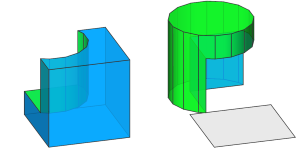 |
Left -->
color("#0399F5") // blue
primitiveCube
subtract Cylinder
Right -->
color("#0399F5") // blue
primitiveCube
subtract(swap) Cylinder
Cylinder -->
color("#09DE1F") // green
t(3,3,3)
primitiveCylinder
The swapMode parameter determines which shape is subtracted from the other.
|
| 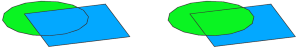 |
Left -->
color("#0399F5") // blue
union Circle
Right -->
color("#0399F5") // blue
union(swap) Circle
Circle -->
color("#09DE1F") // green
t(3,0,3)
primitiveDisk
The swapMode parameter determines the material of overlapping faces.
|
| 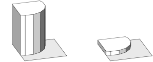 |
attr Height = 10
Left -->
intersect Circle
extrude(Height) // Height == 10
Right -->
intersect(swap) Circle
extrude(Height) // Height == 1
Circle -->
set(Height, 1)
t(3,0,3)
primitiveDisk
The swapMode parameter determines the attributes of the resulting shape.
|
B-Rule
| 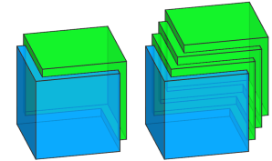 |
Left -->
color("#0399F5") // blue
primitiveCube
union {
color("#09DE1F") // green
t(1,1,1) B.
}
Right -->
color("#0399F5") // blue
primitiveCube
union {
color("#09DE1F") // green
t(1,1,1) B0.
t(1,1,1) B1.
t(1,1,1) B2.
}
Operand B is determined by B-Rule, which can result in a single shape (Left) or multiple shapes (Right). In case of multiple shapes, they are first merged analogous to using inline(unify).
|
| 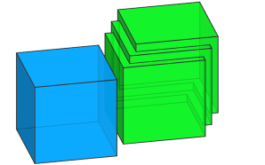 |
Init -->
color("#0399F5") // blue
primitiveCube
union {
color("#09DE1F") // green
t(1,1,11) B0.
t(1,1,1) B1.
t(1,1,1) B2.
}
In case B-Rule results in multiple shapes, they are unified even if they do not intersect operand A.
|
Mass Modeling
| 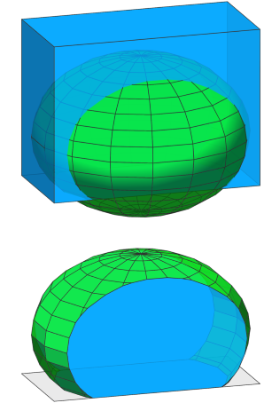 |
Init -->
extrude(45)
intersect Sphere
Sphere -->
s('1, '1, '2)
center(z)
t(0, '-0.2, 0)
primitiveSphere
Step 1: The extruded initial shape (current shape, acting as operand A) is intersected with an inserted sphere (result of the rule Sphere, acting as operand B).
|
| 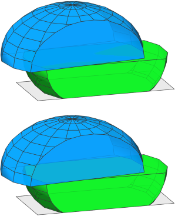 |
Init -->
extrude(40)
intersect Sphere
inline(unify) split(y) { ~1: LowerHalf
| 20: UpperHalf }
LowerHalf --> X.
UpperHalf --> t(10,0,0) r(scopeCenter,0,7.2,0)
Step 2: The current shape is split into two parts. Using inline(unify) the resulting shapes are unified (note the disappearing inner faces).
Here we use inline(unify) instead of the union operation, because we do not want to add geometry to the current shape, but replace it with the union of the resulting shapes of the split operation (i.e., LowerHalf and UpperHalf). |
| 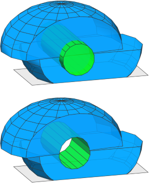 |
Init -->
extrude(40)
intersect Sphere
inline(unify) split(y) { ~1: LowerHalf
| 20: UpperHalf }
subtract Hole
Hole -->
s(16, 16, '1.2)
center(z)
t(30, 5, 0)
rotateScope(-90, 0, 0)
primitiveCylinder
Step 3: We continue refining the mass (current shape after Step 1 and 2, acting as operand A) by subtracting a cylinder (result of the rule Hole, acting as operand B).
|
| 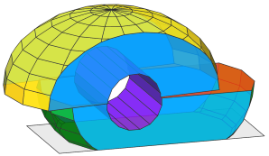 |
Init -->
extrude(40)
tag("Envelope")
intersect Sphere
inline(unify) split(y) { ~1: LowerHalf
| 20: UpperHalf }
subtract Hole
comp(f) { isTagged("Envelope") && side: Blue
| isTagged("Lower") && top : Red
| isTagged("Upper") && bottom : Orange
| isTagged("Lower") : Green
| isTagged("Upper") : Yellow
| isTagged("Hole") : Purple }
Sphere -->
s('1, '1, '2)
center(z)
t(0, '-0.2, 0)
primitiveSphere
LowerHalf --> tag("Lower")
UpperHalf -->
t(10,0,0)
r(scopeCenter,0,7.2,0)
tag("Upper")
Hole -->
s(16, 16, '1.2)
center(z)
t(30, 5, 0)
rotateScope(-90, 0, 0)
primitiveCylinder
tag("Hole")
Blue --> color("#0399F5")
Green --> color("#09DE1F")
Yellow --> color("#FADB19")
Purple --> color("#8D09DE")
Red --> color("#FF360A")
Orange --> color("#FA9100")
Adding tags: Using Boolean 3D operations, it is easy to create a mass model with complex surfaces. In this example, tags are added in each step, which allows to assign the correct rule to the different surfaces at the end (illustrated here by different colors).
|
Boolean 3D and Auto-Tags
| 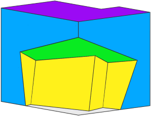 |
Init -->
extrude(40)
subtract {
t(20,-15,-15)
rotate(rel,scope,15,12,25)
}
SurfaceSplitter
SurfaceSplitter -->
comp(f) { isTagged("extrude.top")
&& isTagged("bool.A"): Purple
| isTagged("extrude.top")
&& isTagged("bool.B"): Green
| isTagged("extrude.side")
&& isTagged("bool.A"): Blue
| isTagged("extrude.side")
&& isTagged("bool.B"): Yellow }
In this example, the initial shape is first extruded, which adds the "extrude" auto-tags to all faces.
Then, a translated and rotated copy of the shape is subtracted, which additionally adds the "bool" auto-tags to the resulting faces.
Finally, these tags are used to extract the different surfaces and color them appropriately.
|
Layout Modeling
| 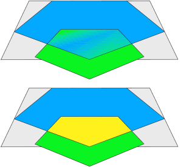 |
Init -->
primitiveDisk(5)
union FrontyardFootprint
ShowBoolAutotags
FrontyardFootprint -->
s(10,0,10)
center(x)
t(0,0,'-0.33)
ShowBoolAutotags -->
comp(f) { isTagged("bool.A")
&& isTagged("bool.B"): Yellow
| isTagged("bool.A") : Blue
| isTagged("bool.B") : Green }
Step 1: A pentagon (primitiveDisk(5)) is inserted and then a union is done with a shrunk copy. The union operation keeps all original edges, which means the resulting geometry consists of 3 faces, as shown in colors.
|
| 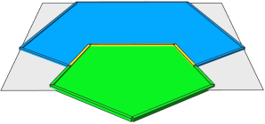 |
Init -->
primitiveDisk(5)
union FrontyardFootprint
deleteUV(0)
inline(append) comp(f) { isTagged("bool.B")= B
| isTagged("bool.A")= A }
cleanupGeometry(vertices, 0) // reconnect faces
ShowTags
A --> tag("eHouse", edges)
B --> deleteTags("bool.A")
cleanupGeometry(edges, 0) // merge faces
tag("eFrontyard", edges)
ShowTags -->
ShowBoolAutotags
comp(e) { isTagged("eFrontyard")
&& isTagged("eHouse"): YellowEdge
| isTagged("eHouse") : BlueEdge
| isTagged("eFrontyard") : GreenEdge }
Step 2: The goal is to merge the yellow and green faces and tag the edges in preparation for Step 3. The comp is used to modify the respective faces and then
inlining and cleanupGeometry is used to merge the modified pieces back together.
Note: In order to use cleanupGeometry to merge the faces in rule B, deleteUV is needed to remove the UV coordinates on the inserted assets, and deleteTags is required to remove "bool.A", which would otherwise prevent the process. |
| 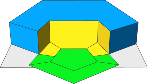 |
Init -->
primitiveDisk(5)
union FrontyardFootprint
deleteUV(0)
inline(append) comp(f) { isTagged("bool.B")= B
| isTagged("bool.A")= A }
cleanupGeometry(vertices, 0) // reconnect faces
comp(f) { isTagged("bool.A"): House
| isTagged("bool.B"): Frontyard }
House -->
extrude(3)
comp(f) { isTagged("eFrontyard"): Yellow
| all : Blue }
Frontyard -->
offset(-1)
comp(f) { isTagged("eHouse"): Yellow
| all : Green }
Step 3: The house footprint is extruded and the frontyard footprint is offset.
The edge tags from Step 2 are automatically propagated to the new faces, allowing to distinguish the facades facing the frontyard and the offset borders touching the house.
This information could be used in subsequent steps to model the entrance area. |
Behavior with open operands
| 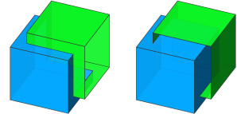 |
Left -->
color("#0399F5") // blue
primitiveCube
union {
color("#09DE1F") // green
t(2,2,2)
comp(f) { front: NIL | all= B. }
}
Right -->
color("#0399F5") // blue
primitiveCube
union {
color("#09DE1F") // green
t(2,2,2)
comp(f) { left: NIL | all= B. }
}
Operand A is a closed cube, while operand B is an open cube.
Left: The open boundary of B is not intersecting operand A. Right: The open boundary of B is intersecting operand A. |
| 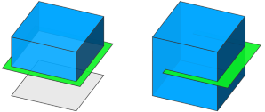 |
Left -->
color("#0399F5") // blue
primitiveCube
union {
color("#09DE1F") // green
primitiveQuad
s(12,0,12)
center(xyz)
}
Right -->
color("#0399F5") // blue
primitiveCube
union {
color("#09DE1F") // green
primitiveQuad
s(12,0,10)
t(-1,5,2)
}
Operand A is a closed cube, while operand B is a 2D quad.
Left: The quad fully cuts the cube. Everything below the plane is regarded as "inside" and thus disappears. Right: The quad only partially cuts the cube. |
Copyright ©2008-2024 Esri R&D Center Zurich. All rights reserved.